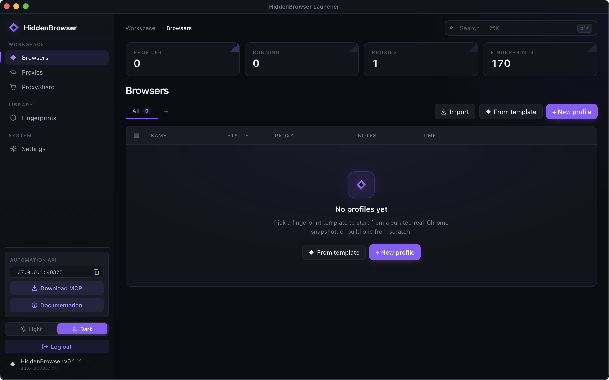

Always on the latest patched Chromium · privacy by design
Hundreds of identities.
Your data stays yours.
A privacy-first browser for web scraping and multi-accounting. Each profile is a coherent, self-contained device, so your real identity never leaks — handled inside Chromium's C++ engine, not JS injection.

170
real-device profiles
C++
engine-level privacy
100%
browserscan authenticity
4
ways to drive it
Features
Coherent identities, engineered deep
Every fingerprint lives inside Blink, V8 and net — so there are no JS shims to detect, and no seams between what a page reads and what the OS would report.
{{ f.icon }}
{{ f.title }}
{{ f.desc }}
Surfaces patched
Every leak the engine can produce
Each surface is handled per-profile and stays internally consistent with the assigned device and proxy exit.
{{ s }}
Out of the box
Passes the checks that matter
Default profile, default settings, run against public detectors.
Detector
What it checks
Result
{{ r.site }}
{{ r.detail }}
{{ r.verdict }}
Proof
Seen through the detectors' eyes
{{ curG.cap }}
{{ giLabel }}
Take back your privacy.
macOS arm64 · Windows x64 · Linux x64.